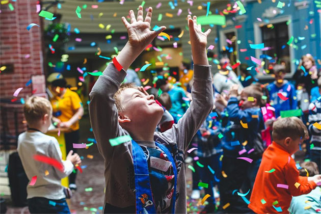
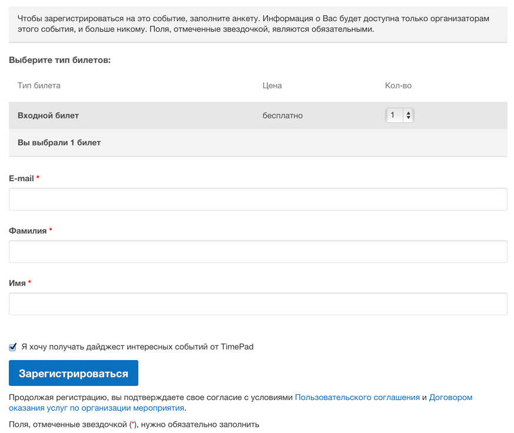

Елки в детском клубе «Детский городок»
Москва, наб. Пресненская, д. 4, стр. 1
14–30 декабря и 2–10 января 2016
от 1700 до 2600 руб.
Купить билет

Адрес: Пресненская наб., д. 4, стр. 1
Метро: Выставочная
Согласно легенде, город мастеров «Мастерславль» располагается возле магического источника, который в течение всего года наполняется радостью и добром, а в новогодние праздники начинает излучать удивительный свет. Но чудеса просто так не случаются, и открыть дорогу к волшебству помогут благородные дела, искренние пожелания и добрые поступки жителей города.
Чудесное место для детей
Город мастеров «Мастерславль» приглашает детей и их родителей принять участие в интерактивной новогодней программе, полной чудес и приключений. На нарядно украшенных улицах города развернётся праздничное действо с танцами, песнями, играми, выступлениями цирковых артистов и знакомством со сказочными персонажами. Дети раскроют секрет магической реки, найдут кристаллы добра и приведут в движение чудодейственный механизм, который подарит городу настоящий праздник.
Для гостей также будут работать тематические новогодние мастерские. Но главным сюрпризом для всех станет яркое впечатляющее светомузыкальное шоу на городской площади, сопровождаемое снегопадом.
«Спешите делать добро!» — под таким девизом пройдут новогодние праздники в городе мастеров, ведь именно любовь, дружба, искренность и бережное отношение к семейным ценностям смогут сделать грядущий год по-настоящему хорошим.
Регистрация
